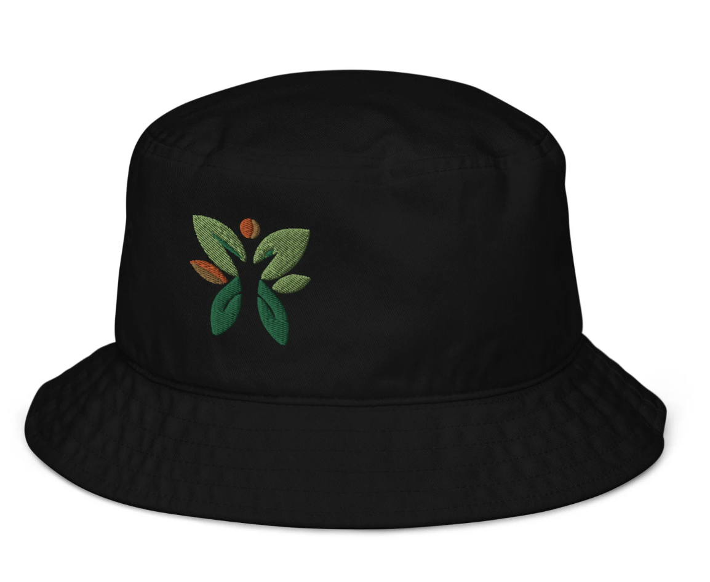

Our Products
-
Eco-friendly Organic Bucket Hat
Price: $47.25
Description: Introducing our stylish and eco-friendly Organic Bucket Hat, made with the finest organic cotton and designed for both comfort and style. With its soft and breathable material, this hat is perfect for any outdoor activity, from gardening to hiking. And the best part? 50% of all profits from the sale of this hat will be donated to a charity focused on protecting our planet and its precious resources. By purchasing our Organic Bucket Hat, not only will you be supporting sustainable fashion, but you'll also be contributing to a great cause. Join us in our mission to make a difference and show off your eco-friendly style with our Organic Bucket Hat.
- Buy Now